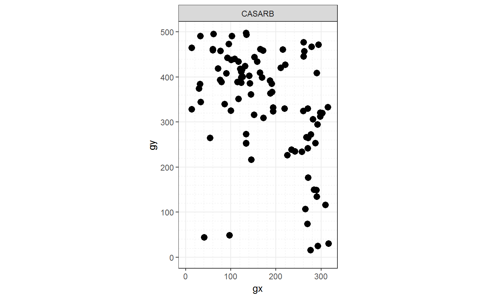
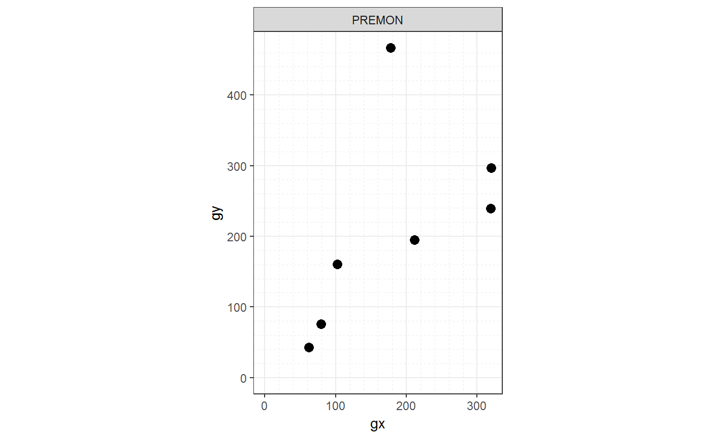
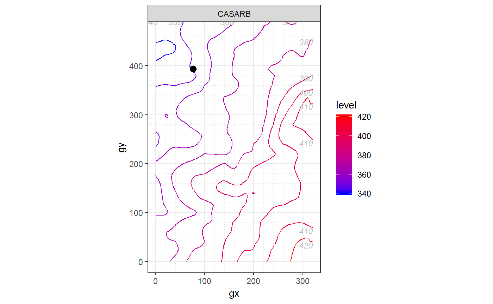
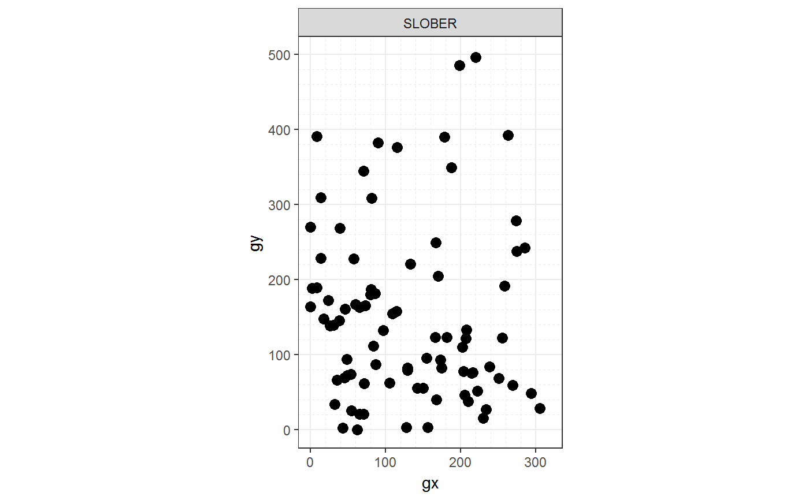

R/autoplot_by_species.R
autoplot_by_species.sp_elev.RdThese functions extend the functionality of autoplot.sp() and
autoplot.elev() and return not a single plot but a list of plots. It is
ideal to print a .pdf file with one plot per page. They automatically plot
the variables sp and elev of a ForestGEO-like dataset of class 'sp_elev'.
Create a 'sp' object with:
object <- sp(DATA-WITH-VARIABLE-sp)
Create a 'sp_elev' object with:
object <- sp_elev(DATA-WITH-VARIABLE-sp, DATA-WITH-VARIABLE-elev)
See sections Usage and Examples.
# S3 method for sp_elev autoplot_by_species(object, species = "all", fill = "black", shape = 21, point_size = 3, contour_size = 0.5, low = "blue", high = "red", hide_color_legend = FALSE, bins = NULL, add_elevation_labels = TRUE, label_size = 3, label_color = "grey", xyjust = 1, fontface = "italic", xlim = NULL, ylim = NULL, custom_theme = NULL, ...) # S3 method for sp autoplot_by_species(object, species = "all", fill = "black", shape = 21, point_size = 3, hide_color_legend = FALSE, xlim = NULL, ylim = NULL, custom_theme = NULL, ...)
| object | An object created with |
|---|---|
| species | A character vector. Each element of the vector must be the
code for one species in the column |
| fill | Character; either a colour or "sp", which maps each species to a different color. |
| shape | A number giving point size and shape (as in
|
| point_size | A number giving point size and shape (as in
|
| contour_size | A number giving the size of the contour of elevation
lines. Passed to |
| low | A string giving a color of the elevation lines representing low and high elevation. |
| high | A string giving a color of the elevation lines representing low and high elevation. |
| hide_color_legend | Logical; |
| bins | A number giving the number of elevation lines to map. |
| add_elevation_labels | Logical; |
| label_size | A number ( |
| label_color | A number ( |
| xyjust | A number to adjust the position of the text labels of the elevation lines. |
| fontface | A number ( |
| xlim | A vector of length 2, for example |
| ylim | A vector of length 2, for example |
| custom_theme | A valid |
| ... | Other arguments passed to methods. |
autoplot_by_species(sp_elev(DATA-WITH-VARIABLE-sp) (without elevation data)
is equivalent to autoplot_by_species(sp(DATA-WITH-VARIABLE-sp)).
fgeo.map wraps the ggplot2 package. For more control you can use ggplot2 directly.
Other functions to plot elevation: autoplot.sp_elev,
elev, sp_elev
Other functions to plot species: autoplot.sp_elev,
sp_elev, sp
# Species --------------------------------------------------------------- # Small dataset with a few species for quick examples some_sp <- c("PREMON", "CASARB") census <- subset(fgeo.data::luquillo_tree5_random, sp %in% some_sp) autoplot_by_species(sp(census))#> $CASARB#> #> $PREMON#># Species and or elevation ---------------------------------------------- # Species only: Same as autoplot_by_species(sp(census)) autoplot_by_species(sp_elev(census))#> $CASARB#> #> $PREMON#># Species and elevation census_elevation <- sp_elev(census, fgeo.data::luquillo_elevation) p <- autoplot_by_species(census_elevation) # Showing only the first plot p[[1]]